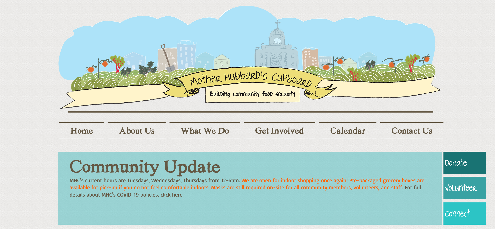

HOME
ABOUT
DESIGN
HOBBIES
RESUME
- UX PROJECTS -

Serve IT Internship
Summer 2022 | Research | Web design
I245: Pet
Spring 2021 | Research | 2nd Class Project | Report
I300: Game
Spring 2021 | Research | 1st Class Project | Report